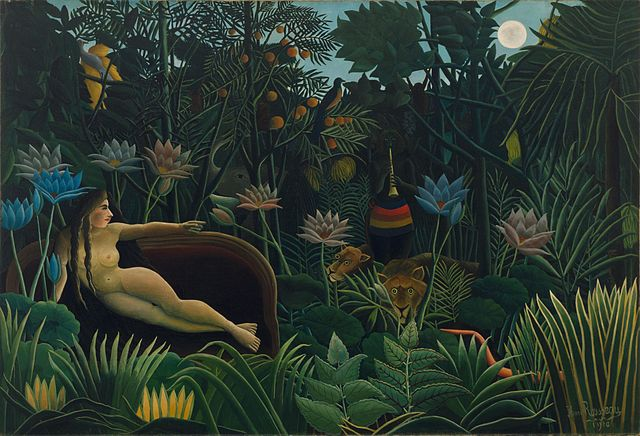

-French Art-

- Famous/Renowned: Yes
- Artist: Claude Monet
- How will it help?:
- Try and describe the simple
-
scene, and write down your observations.
-
For a more challenging task, try write down the emotions
- it invokes in you!
- Style: Impressionism
- Skills it will improve: Writing, Cultural Awareness

- Famous/Renowned: Yes
- Artist: Vincent van Gogh
- How will it help?:
- The cousin to the recongizable Starry Night,
-
by Van Gogh, this one featuring the Rhône highlights strong colors, and will help you expand
-
your vocabulary, and is easier to grasp for beginner French learners!
- Style: Post Impressionism
- Skills it will improve: Writing, Reading, Cultural Awareness

- Famous/Renowned: Yes
- Artist: Henri Rousseau
- How will it help?:
- The hardest of them all.
-
Explore French realism, conduct research, and fun
- for your imagination! For an extra, try describe this orally to a friend, in French!
- Style: Naïve Art/Primitivism
- Skills it will improve: Writing, Cultural Awareness, Reading, Speaking